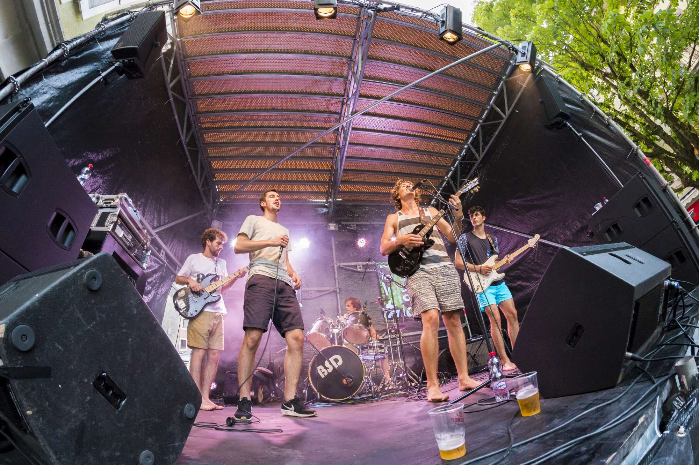
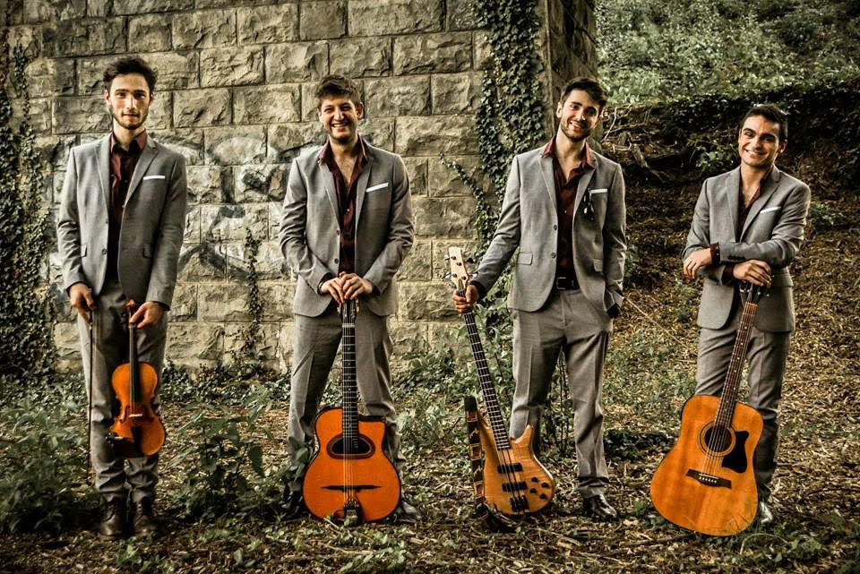
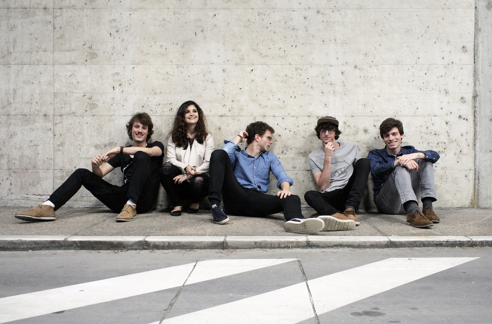

Le batteur est un grand fan de funk et de hip-hop old school américain, le chanteur un mordu de reggae, le bassiste un fidèle
de la musique manouche et festive, le guitariste solo s’inspire de pop et le rappeur ne peut
passer deux jours sans écouter de rap français… Mélangez tout ça, pensez que chacun d’entre nous
fait découvrir aux autres son univers et ça donne un peu….BSD….de la « pop-indé-rappée » : une
voix chantée à laquelle se mêle une voix rappée sur des instrumentales à l’intersection du ska,
de la pop et du reggae.
Des textes engagés, des rythmes entraînants, des sonorités diverses, en résumé, faire bouger
les corps tout en faisant travailler les esprits, voilà ce qui nous motive depuis 2016 à composer
et ensuite exprimer nos compositions sur scène.
Concerts
BSD


Gipsy Tonic

Gipsy Tonic est un quartet de jazz manouche composé de deux guitares, une basse et un violon. Issus de milieux très différents (jazz, classique, rock...), les membres du groupe ont déjà joué en Suisse et en France, dans bon nombre de bars, fêtes privées, événements culturels etc. La culture et l’héritage de Django les inspire à travailler la plupart de ses morceaux, connus ou moins connus, en ajoutant une touche personnelle. Leur musique baigne dans la bonne humeur et les projets vont bon train: participation à des festivals, enregistrements, petites tournées... En somme, swing, bonne ambiance et motivation sont au rendez-vous.
The Cooked Cooked Cookies

Derrière un nom qui pourrait faire penser à un test logopédie, les Cooked Cooked Cookies sont avant tout un groupe d’amis
ayant trouvé un moyen radical de décompresser après leurs journées académiques.
C’est donc en toute décontraction et sans prétention qu’ils proposent de partager avec eux leur
bonne humeur et leur amour pour la musique.
La musique parlons-en justement, ouverts d’esprit, les Cooked Cooked Cookies trouvent leur inspiration
dans plusieurs styles de musique allant du blues rock à une brit pop plus légère. Il en résulte
des compositions uniques alliant élans énergiques et douceur mélancolique, le tout bercé par
une voix suave et enchanteresse. Mais ne tournant pas le dos à leurs mentors musicaux c’est avec
un plaisir communicatif, qu’ils reprennent certains classiques de leur liste de lecture.